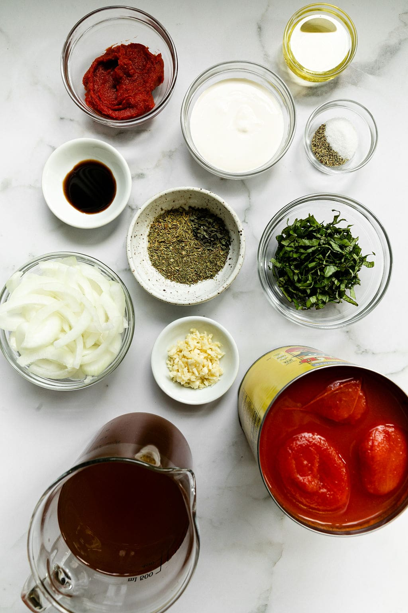
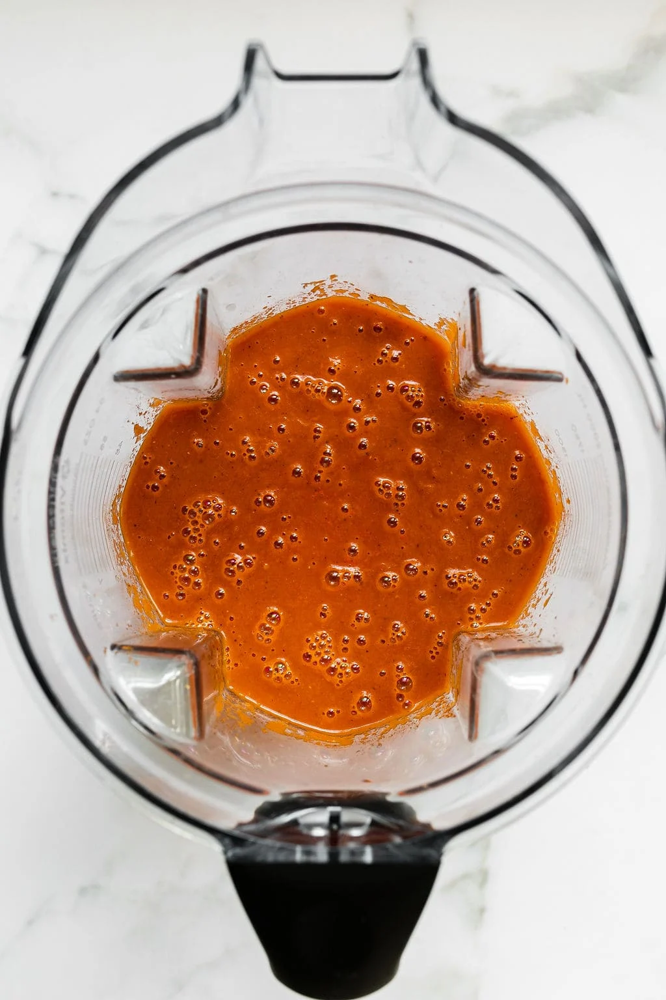
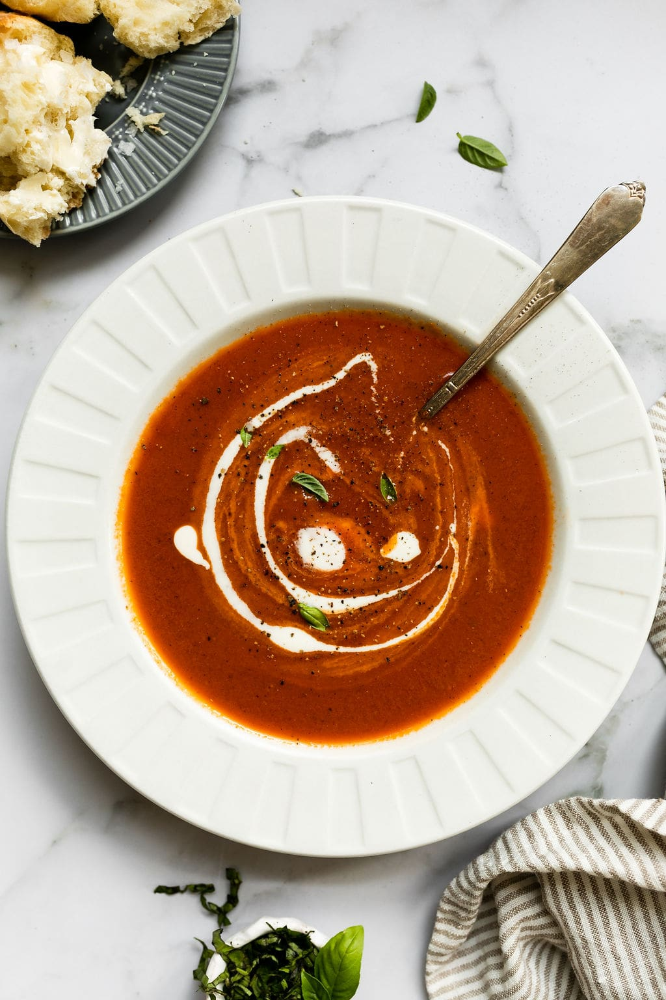

Ingredients
- 2 tablespoons olive oil
- ½ medium yellow onion, thinly sliced (1 cup)
- 3 cloves garlic, peeled and roughly chopped
- 3 tablespoons tomato paste
- 1 teaspoon dried Italian seasoning
- ½ teaspoon dried basil
- ½ teaspoon dried thyme
- ½ teaspoon balsamic vinegar
- 1 (28-ounce) can whole peeled tomatoes, well-drained and juice reserved
- 2 cups low-sodium vegetable broth
- ½ teaspoon fine salt
- ¼ teaspoon black pepper
- ¼ cup creme fraiche (may substitute heavy cream, Greek yogurt, or sour cream. Omit for vegan or use non-dairy plain yogurt or non-dairy sour cream for vegan and dairy-free)
- 3 tablespoons sliced fresh basil
Directions
- Place a heavy bottom pot (Dutch oven) over medium-high heat. When the pot is hot, add the olive oil and swirl to coat. When the oil starts to shimmer, add the onion. Cook, stirring occasionally, for 4 minutes or until the onions just start to soften.
- Add the garlic. Stir and cook for 1 minute, stirring constantly until the garlic is fragrant.
- Stir in the tomato paste, Italian seasoning, basil, thyme, and balsamic vinegar. Cook 3-4 minutes, stirring occasionally until the tomato sauce starts to thicken and caramelize just a bit (but not burn).
- Add the drained tomatoes and continue to cook for 5 minutes, stirring occasionally.
- Add the reserved tomato juice and broth. Stir. Reduce heat and simmer uncovered for 15 minutes.
- Remove from heat. Transfer soup to a blender and blend until smooth. Taste and add salt and pepper to taste.
- Swirl the cream fraiche into the soup bowls just before serving and sprinkle with fresh basil and cracked black pepper.